Gestão de plantios
Registre datas, culturas, talhões e previsão de colheita.
Tecnologia que cabe no campo
Organize informações sobre culturas, talhões e plantios em um só lugar. O SafraScan aproxima a tecnologia da rotina de pequenos e médios produtores.

O que você encontra
Uma plataforma pensada para reunir os dados da propriedade e facilitar a consulta das informações.
Registre datas, culturas, talhões e previsão de colheita.
Centralize leituras e informações dos sensores conectados à propriedade.
Consulte os registros da lavoura e tenha uma visão mais estruturada da produção.